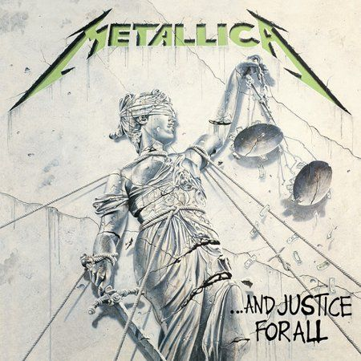

...And Justice For All
1988
Az ...And Justice for All a Metallica negyedik stúdióalbuma, amely 1988. szeptember 7-én jelent meg. Ez az anyag mérföldkőnek számít a zenekar történetében, nemcsak zeneileg, hanem emberileg is. Az album a legendás basszusgitáros, Cliff Burton halála után készült, aki 1986-ban hunyt el egy tragikus buszbalesetben. Helyét Jason Newsted vette át, aki ebben az albumban debütált teljes jogú tagként. A lemez hangzásvilága - különösen a sokat vitatott, alig hallható basszus - részben az ő fogadtatásának és a zenekaron belüli dinamikáknak is tükre.
A Metallica tagjai ekkor James Hetfield énekes-gitáros, Lars Ulrich dobos, Kirk Hammett szólógitáros és Jason Newsted basszusgitáros voltak. A lemezt komplex, hosszú és technikás dalok jellemzik, amelyek szembemennek a rádióbarát struktúrákkal, és politikai, társadalmi témákat boncolgatnak - többek között az igazságszolgáltatás torzulását, a háború borzalmait és a szabadság illúzióját. A címadó szám, valamint az olyan ikonikus tételek, mint a One vagy a Blackened, mára a metal műfaj klasszikusaivá váltak.
Az ...And Justice for All nemcsak zeneileg, de vizuálisan is erős állásfoglalás: borítóján egy megbilincselt, széteső Justitia-szobor látható, amely tökéletesen összefoglalja az album üzenetét - az igazság már nem vak, hanem láncra vert és eltorzított. Ez az album jelentette az áttörést a Metallica számára a szélesebb közönség felé, a One videóklipje például az első volt, amit a zenekar valaha készített, és hatalmas szerepet játszott abban, hogy bekerültek a mainstream médiába.
Az ...And Justice for All egy sötét, dühös és intellektuálisan is kihívást jelentő lemez, amely máig vitákat szül, de egyet nem lehet elvitatni tőle: a Metallica itt lépett be végleg a metal nagyágyúi közé.
| Szám | Hossz | Írók |
|---|---|---|
| Blackened | 6:42 | Hetfield, Ulrich, Newsted |
| ...And Justice For All | 9:45 | Hetfield, Ulrich, Hammett |
| Eye of the Beholder | 6:25 | Hetfield, Ulrich, Hammett |
| One | 7:26 | Hetfield, Ulrich |
| The Shortest Straw | 6:35 | Hetfield, Ulrich |
| Harvester of Sorrow | 5:45 | Hetfield, Ulrich |
| The Frayed Ends of Sanity | 7:43 | Hetfield, Ulrich, Hammett |
| To Live is to Die | 9:48 | Hetfield, Ulrich, Burton |
| Dyers Eve | 5:13 | Hetfield, Ulrich, Hammett |